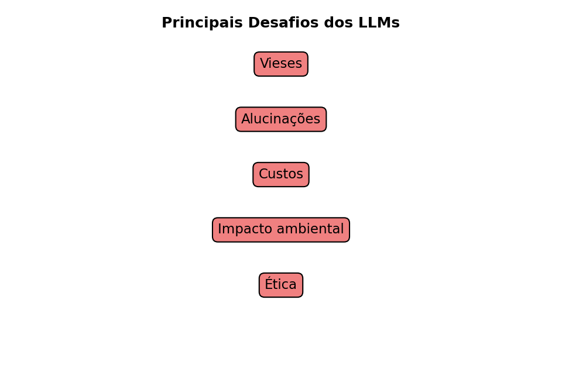

Os Large Language Models são poderosos, mas não perfeitos. Descubra suas principais limitações: vieses, alucinações, custos de treinamento, impacto ambiental e questões éticas.
Os Large Language Models (LLMs) já transformaram a forma como interagimos com tecnologia.
Mas, apesar de seu poder, eles não são perfeitos.
Existem limitações técnicas, sociais e éticas que precisam ser entendidas.
Neste post, vamos explorar os principais desafios dos LLMs.
🎭 Vieses nos modelos
LLMs aprendem a partir de textos da internet, que refletem opiniões, preconceitos e desigualdades humanas.
Isso significa que eles podem reproduzir vieses de gênero, raça, classe social etc.
Exemplo: associar profissões a um gênero específico.
Dica💡 Exemplo prático
Se perguntarmos: “Quem é um bom programador?”
O modelo pode tender a responder “ele” em vez de “ela”, refletindo o desequilíbrio de representatividade nos dados de treino.
👉 Esse é um desafio ético e técnico, pois remover completamente os vieses é praticamente impossível.
🌀 Alucinações
LLMs são excelentes em gerar texto fluente e coerente, mas isso não garante que o conteúdo seja verdadeiro.
Esse fenômeno é chamado de alucinação (hallucination).
O modelo pode inventar fatos, nomes, artigos e até códigos que não existem.
O texto parece confiável, mas é fabricado.
📚 Exemplos práticos
Criar citações falsas: “Segundo o artigo de Silva (2019)…” (mas o artigo não existe).
Inventar datas históricas erradas: dizer que a 2ª Guerra Mundial terminou em 1944.
Gerar códigos que não compilam, mas que parecem plausíveis.
Aviso⚠️ Por que os LLMs alucinam?
Natureza estatística: eles não “sabem fatos”, apenas calculam a próxima palavra provável.
Falta de memória real: não têm acesso a uma base de dados estruturada, apenas padrões do treino.
Pressão para responder: quando não sabem, ainda assim produzem um texto coerente.
🔬 Como a pesquisa tenta reduzir alucinações
Busca externa: integrar LLMs com bancos de dados ou mecanismos de busca em tempo real.
Verificação cruzada: pedir que o modelo gere múltiplas respostas e compare.
Instruções mais fortes: técnicas de prompt engineering para limitar respostas “inventadas”.
Treinamento específico: usar bases com informações verificadas.
Dica💡 Analogia simples
Imagine um aluno criativo numa prova:
Quando não sabe a resposta, inventa uma explicação convincente.
Pode enganar no primeiro olhar, mas não significa que está certo.
Assim funcionam as alucinações de LLMs.
💰 Custos de Treinamento
Treinar um LLM moderno exige:
Centenas de GPUs ou TPUs trabalhando em paralelo.
Semanas ou meses de processamento.
Milhões de dólares em infraestrutura.
Nota📊 Custo computacional
Modelos de fronteira podem exigir investimentos muito altos em hardware, energia, armazenamento, equipes técnicas e infraestrutura de nuvem.
Os valores exatos geralmente não são públicos, mas a ordem de grandeza ajuda a entender por que poucos grupos conseguem treinar modelos desse porte do zero.
👉 Isso limita o acesso à tecnologia a poucas empresas gigantes, criando concentração de poder.
🌱 Impacto Ambiental
O consumo de energia dos LLMs é enorme.
Cada treinamento pode emitir toneladas de CO₂.
A manutenção (uso diário) também consome energia significativa em data centers.
Dica🌍 Comparação ilustrativa
O impacto ambiental depende da matriz energética, do tamanho do modelo, do hardware usado e da frequência de uso.
Por isso, mais do que memorizar um número fixo, é importante entender que eficiência energética e uso responsável são partes centrais do debate.
Isso levanta preocupações sobre sustentabilidade e a necessidade de modelos mais eficientes.
⚖️ Questões Éticas
Transparência: usuários muitas vezes não sabem como o modelo foi treinado.
Direitos autorais: textos, músicas e imagens usados no treinamento podem ter copyright.
Uso malicioso: deepfakes, desinformação, fraudes automatizadas.
Aviso🚨 Dilema ético
A mesma tecnologia que gera aulas acessíveis pode ser usada para criar propaganda enganosa ou desinformação política.
👉 A ética da IA é um campo em rápida evolução, e os LLMs estão no centro do debate.
🧩 Quiz — Vieses e uso responsável
Q1. Quando dizemos que um LLM pode reproduzir vieses, queremos dizer que ele pode:
✗Resolver qualquer problema matemático sem erro.
✓Repetir padrões, estereótipos ou desigualdades presentes nos dados de treinamento.
✗Eliminar automaticamente todos os preconceitos humanos.
Q2. Um uso responsável de LLMs exige:
✗Aceitar toda resposta gerada como verdadeira.
✗Evitar qualquer revisão humana.
✓Verificar informações importantes, considerar riscos e manter supervisão humana.
🖼️ Resumo Visual

ImportanteCódigo em Python (clique para expandir) – gera a imagem acima
# Gera e salva "images/llm-challenges.png"from pathlib import Pathimport matplotlib.pyplot as pltout = Path("images"); out.mkdir(parents=True, exist_ok=True)outfile = out /"llm-challenges.png"fig, ax = plt.subplots(figsize=(6.5, 4.5), dpi=150)items = ["Vieses","Alucinações","Custos","Impacto ambiental","Ética"]# posição vertical para as caixasys = [0.85, 0.70, 0.55, 0.40, 0.25]for text, y inzip(items, ys): ax.text(0.5, y, text, fontsize=11, ha="center", va="center", bbox=dict(boxstyle="round,pad=0.4", facecolor="lightcoral", edgecolor="black"))ax.text(0.5, 0.95, "Principais Desafios dos LLMs", ha="center", fontsize=12, weight="bold")ax.set_xlim(0, 1)ax.set_ylim(0, 1)ax.axis("off")plt.tight_layout()plt.savefig(outfile, bbox_inches="tight")plt.close()print(f"Figura salva em: {outfile}")
Figura salva em: images/llm-challenges.png
🧩 Quiz — Teste seus conhecimentos
Q3. O que significa “alucinação” em um LLM?
✗Quando o modelo reproduz vieses sociais.
✓Quando o modelo inventa informações falsas, mas de forma coerente.
✗Quando o modelo consome muita energia para treinar.
Q4. Qual dos pontos abaixo está ligado ao impacto ambiental dos LLMs?
✗Tendência de associar estereótipos.
✗Geração de respostas falsas.
✓O consumo de energia e emissão de CO₂ em data centers.
📊 Resumo Comparativo
Desafio
Descrição
Exemplo
Vieses
Reproduzem preconceitos sociais
Associar profissões a um gênero
Alucinações
Inventam fatos falsos
Citar artigo inexistente
Custos
Alto gasto com GPUs, energia e infraestrutura
Treinamentos de fronteira podem custar milhões de dólares
Impacto ambiental
Consumo elevado de energia e recursos
Data centers exigem energia, resfriamento e infraestrutura
Ética
Questões de uso e copyright
Deepfakes, desinformação
✅ Conclusão
Os LLMs são uma tecnologia transformadora, mas trazem riscos e responsabilidades.
Eles podem:
reproduzir vieses sociais;
gerar alucinações;
exigir grande quantidade de energia e infraestrutura;
concentrar poder tecnológico em poucas organizações;
levantar questões éticas sobre autoria, privacidade, desinformação e responsabilidade.
Isso não significa que devemos rejeitar a tecnologia. Significa que devemos usá-la com critério, verificação e supervisão humana.
O futuro da IA depende não apenas de modelos mais capazes, mas também de instituições, usuários, pesquisadores e educadores capazes de compreender seus limites.
No próximo post, vamos explorar as aplicações práticas dos LLMs: educação, saúde, programação, arte e muito mais. 🚀
Este site nasce da vontade de expor ideias com boa matemática, boa tipografia e boas explicações.
Quer saber a linha editorial, tecnologias e bastidores?